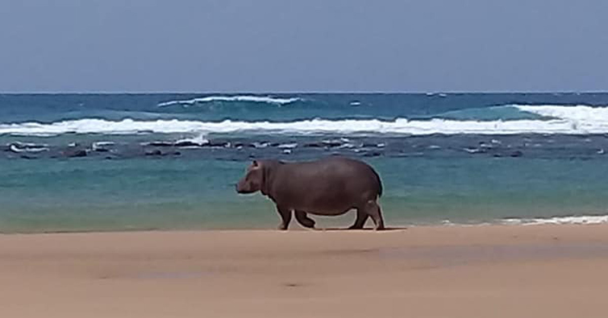

Hippopotamus amphibius — Common Hippopotamus, KZN
Hippopotamus amphibius — Common Hippopotamus, KZN
Common Hippopotamus
Hippopotamus amphibius ⚠ VulnerableThe common hippopotamus is Africa's third-largest land mammal and one of the continent's most iconic megaherbivores. These massive, semi-aquatic mammals spend their days submerged in rivers, lakes, and estuaries to keep cool, emerging at night to graze on surrounding grasslands. Despite their seemingly docile appearance, hippos are among Africa's most dangerous animals, responsible for more human fatalities than any other large mammal except crocodiles.
In KwaZulu-Natal, hippos play a vital role as ecosystem engineers—their grazing patterns shape vegetation communities, their movements through water create channels and pools, and their nutrient-rich dung fertilizes aquatic systems, supporting entire food webs. The St. Lucia estuarine system in iSimangaliso Wetland Park supports South Africa's largest population, with approximately 800 to 1,000 individuals thriving in this UNESCO World Heritage Site.
Physical Description
The common hippopotamus possesses a massive, barrel-shaped body supported by short, stocky legs with four-toed feet. Their skin is remarkably thick—up to 6 cm in places—providing protection from injuries during fights and environmental hazards. The skin appears grey to grey-brown, sometimes with pinkish tones, and lacks hair except for sparse bristles around the mouth and tail tip.
Hippos have an enormous head with a broad muzzle and massive jaws that can open to an angle of 150 degrees, revealing large canine tusks and incisors. The lower canine teeth can grow up to 50 cm long and are continuously growing, sharpened against the upper incisors. Males develop particularly large tusks used in territorial combat and dominance displays.
Their eyes, ears, and nostrils are positioned on top of the head, allowing them to remain almost entirely submerged while still seeing, hearing, and breathing. They can close their nostrils and ears underwater and can hold their breath for up to five minutes. Adult males typically weigh 1,500 to 3,200 kg, while females weigh 1,300 to 1,700 kg, though exceptional males can exceed 4,000 kg.
Behaviour
Hippos are primarily nocturnal, spending daylight hours almost entirely submerged in water to keep cool and protect their sensitive skin from the sun. They lack sweat glands but secrete a reddish, oily substance often called "blood sweat" that acts as a natural sunscreen and antibiotic, protecting their skin from ultraviolet radiation and bacterial infections.
At dusk, hippos emerge from the water to graze, traveling up to 10 kilometers inland to feeding grounds along well-worn hippo paths. They are highly territorial in water but not on land, where multiple individuals may graze peacefully in proximity. Bulls establish and defend aquatic territories that may contain several females and their young.
Despite their massive size, hippos can move surprisingly fast on land—reaching speeds up to 30 km/h in short bursts. They are generally aggressive when threatened or when their escape route to water is blocked. Bulls engage in spectacular territorial fights, clashing with their massive canines and inflicting serious wounds. Hippos communicate through various vocalizations including grunts, roars, and the characteristic honking call that can be heard over long distances and even underwater.
Diet & Feeding
The common hippopotamus is a herbivore with a diet consisting almost entirely of grass. Despite their massive size, hippos have relatively small stomachs for their body mass and must consume approximately 40 kg of grass nightly—only about 1.5% of their body weight, which is modest compared to other herbivores of similar size.
Hippos are selective grazers, preferring short, tender grasses close to the ground. They crop grass using their wide, muscular lips rather than their teeth, creating characteristic feeding lawns in areas of regular grazing. These grazing patterns significantly influence vegetation structure and composition in their territories.
- Various grass species (primary diet)
- Reeds and aquatic vegetation (occasionally)
- Fallen fruit (opportunistically)
- Agricultural crops (when available near water)
While primarily herbivorous, hippos have occasionally been observed consuming carrion or even engaging in cannibalism, though this is rare and thought to occur during periods of nutritional stress. Their digestive system is uniquely adapted to extract maximum nutrition from tough grasses through bacterial fermentation in their multi-chambered stomach.
Reproduction
Female hippos reach sexual maturity at 5 to 6 years of age, while males mature physically at 6 to 7 years but typically don't establish territories and begin breeding until 10 to 14 years old. Breeding occurs throughout the year in KwaZulu-Natal, though peaks often correspond with the dry season when water levels are lower and social interactions intensify.
Mating takes place in shallow water, with the female's head submerged throughout the process. After a gestation period of approximately 8 months (240 days), the female gives birth to a single calf, rarely twins. Birth typically occurs in water or on land near the water's edge, with the calf weighing 25 to 55 kg at birth.
Calves can swim and dive almost immediately after birth, though they spend considerable time resting on their mother's backs while in deeper water. Mothers are highly protective and may aggressively defend their young from any perceived threats, including other hippos, crocodiles, and humans. The bond between mother and calf is exceptionally strong, with nursing continuing for up to a year, though calves begin grazing at 3 to 4 months of age. Young hippos remain with their mothers until the next calf is born, typically after 2 to 3 years.
Habitat & Distribution in KZN
The common hippopotamus inhabits rivers, lakes, estuaries, swamps, and wetlands throughout KwaZulu-Natal wherever permanent or semi-permanent water bodies exist alongside suitable grazing areas. They require deep water for daytime refuge—typically at least 1.5 meters deep—with gently sloping banks that allow easy entry and exit, and nearby grasslands within several kilometers for nocturnal feeding.
KwaZulu-Natal supports South Africa's largest and most significant hippopotamus populations. The St. Lucia estuarine system in iSimangaliso Wetland Park is the stronghold, with 800 to 1,000 individuals—the single largest concentration in the country. This population fluctuates with drought and flooding cycles but remains stable overall. Additional important populations exist in Ndumo Game Reserve along the Pongola and Usutu river floodplains (approximately 150 to 200 individuals), Hluhluwe-iMfolozi Park's river systems, and various other protected and private reserves throughout northern KZN.
Historically, hippos ranged far more widely across southern Africa, inhabiting river systems throughout the subcontinent. Hunting and habitat destruction eliminated populations from most of their former range by the early 20th century. The common hippopotamus is now classified as Vulnerable on the IUCN Red List, with continental populations declining by an estimated 7 to 20% over the past three decades. In South Africa, populations are stable in protected areas but remain vulnerable to drought—which can cause mass mortality events—habitat loss, human-wildlife conflict, and disease.
Climate change poses particular threats to hippo populations through altered rainfall patterns affecting water availability, increased drought frequency and severity, and potential disruption of seasonal flooding patterns that maintain critical wetland habitats. The St. Lucia system has experienced significant fluctuations in water levels and salinity in recent decades, occasionally stressing the hippo population. Long-term conservation requires maintaining adequate freshwater flows, protecting grazing lands adjacent to water bodies, and managing the inevitable conflicts that arise when humans and hippos compete for space and resources.
Fascinating Facts
Africa's Deadliest Large Mammal
Despite their herbivorous diet and seemingly docile appearance, hippos are considered Africa's most dangerous large mammal to humans. They are responsible for an estimated 500 to 3,000 human fatalities annually across the continent—more than lions, elephants, leopards, or buffalo. Their aggression stems from their highly territorial nature and their instinct to charge anything blocking their route back to water.
Closest Living Relatives are Whales
Molecular evidence reveals that hippos' closest living relatives are cetaceans—whales, dolphins, and porpoises. These two groups share a common ancestor that lived approximately 50 to 60 million years ago. This surprising evolutionary relationship is reflected in shared adaptations for aquatic life, including the ability to communicate underwater, give birth in water, and unique skeletal features.
Natural Sunscreen and Antibiotic
Hippos lack sweat glands but secrete a remarkable reddish-brown, oily substance often called "blood sweat" that protects their sensitive skin. This secretion acts as both a natural sunscreen—absorbing ultraviolet light—and an antibiotic that prevents bacterial infections in the wounds that hippos frequently sustain during territorial battles. The red coloration comes from pigments that polymerize into a protective film on the skin.
Ecosystem Engineers
Hippos are keystone species that profoundly shape aquatic and terrestrial ecosystems. Their grazing maintains short-grass lawns that support diverse herbivore communities, their movements through water create channels and pools that persist through dry seasons, and their prodigious dung production—up to 40 kg daily per individual—fertilizes aquatic systems, supporting food webs from algae to fish. The removal of hippos from an ecosystem can trigger cascading ecological changes.
They Can't Actually Swim
Despite spending most of their lives in water, hippos cannot truly swim or float. They are too dense and sink immediately in deep water. Instead, they move through water by walking, trotting, or galloping along the bottom, occasionally propelling themselves off the substrate in a bounding motion. They can hold their breath for up to five minutes while submerged, with the ability to close their nostrils and ears underwater.
Underwater Communication
Hippos have evolved a sophisticated system of underwater communication unique among terrestrial mammals. They can vocalize while completely submerged, producing low-frequency sounds that travel both through water and through the substrate as seismic vibrations. These calls can be detected by other hippos several kilometers away, allowing individuals to communicate their location, status, and territorial boundaries across vast wetland systems.